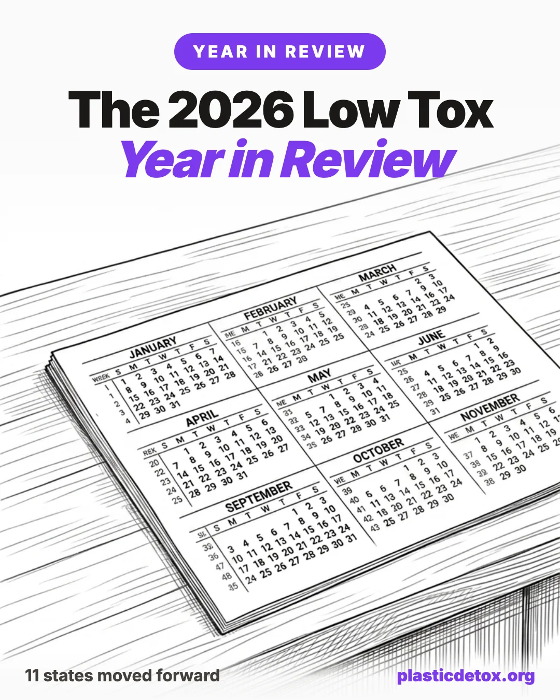

2026 Low Tox Year in Review: What Actually Changed

The federal government rolled back, states ran forward, science kept finding synthetic chemicals where they shouldn't be, and "clean" brands kept getting sued. What that means for your shopping decisions.
All facts, rule statuses, case statuses, and dates here are current as of May 24, 2026. Regulatory and legal landscapes change. Verify the current status of a specific rule, case, or product before acting on it.
The 30 Second Summary
- PFAS tap water limits survived but enforcement got pushed back. The strictest federal PFAS drinking water limits (4 parts per trillion for PFOA and PFOS) remain in force after a January 2026 court ruling, but utilities now have until 2031 instead of 2029 to comply. A countertop reverse osmosis system like the Bluevua RO100ROPOT removes 99.9 percent of PFAS, microplastics, lead, and chlorine with zero plumbing. Full options in our PFAS and microplastic water filter guide.
- State law is now your best free quality signal. With federal PFAS reporting delayed to 2027, eleven states (Maine, Minnesota, Colorado, and others) have stricter bans that took effect January 1, 2026. Because national brands usually reformulate to the strictest state rather than maintain separate products, a product sold in Maine and Minnesota is almost certainly PFAS free, even if you live elsewhere.
- The glyphosate executive order does NOT give Bayer legal immunity. This is the point the article says most coverage gets wrong. The February 18, 2026 order boosts domestic glyphosate production and gives Bayer a new legal argument, but it overturned no verdicts and dismissed no cases. Both the Supreme Court (ruling expected late June) and a bipartisan House vote (280 to 142) are pushing the opposite direction.
- Food dyes are quietly being phased out. Eight artificial dyes are being voluntarily phased out by major brands (Kraft Heinz, General Mills, PepsiCo) by end of 2026, backed by state bans in California, West Virginia, and Virginia. You can act now by avoiding "FD&C [color] No. [number]" on ingredient lists.
- Talc is no longer required to be tested for asbestos. The FDA withdrew its proposed mandatory testing rule in February 2026, so testing is again a manufacturer's choice. The safest move is buying talc free products in categories that historically used it (baby powder, eyeshadow, blush, setting powder, dry shampoo).
- Microplastics were found concentrated in brain tumors. An April 2026 Nature Health study found tumor tissue contained significantly more microplastic than adjacent healthy tissue (roughly 89 vs. 50 micrograms per gram). Importantly, this shows correlation, not causation. The three highest yield personal actions: filter tap water instead of PET bottles, stop heating food in plastic, and replace synthetic items that touch hot food.
- Greenwashing lawsuits are surging (up about 40 percent year over year). Brands using "clean," "natural," "biodegradable," "eco friendly," and "recyclable" are being sued at a much faster rate. The lawsuits are public, so the article's running list effectively tells you which products to avoid right now.
- Only four certifications are genuinely trustworthy. EWG Verified, MADE SAFE, EPA Safer Choice (cleaners), and USDA Organic (food and agricultural ingredients). Everything else, including retailer "clean" badges like Clean at Sephora or Ulta's Conscious Beauty, is marketing, not outside verification. Read the actual ingredient list.
- US cosmetics still get no pre market safety review. MoCRA (2022) gave the FDA new powers, most notably the ability to force recalls for the first time, but it reacts to problems rather than preventing them. The FDA still cannot test or approve ingredients before a product hits the shelf.
Part One: The Regulatory Landscape
1. The Federal Rollback (US)
The federal story is not a clean rollback. The headline rules got slowed. A few quieter rules moved forward. Here is each one, in plain English.
The PFAS drinking water rule
In 2025 the new administration tried to weaken four of those six limits. In January 2026 a federal court rejected the attempt and the limits stayed on the books. The EPA then pushed back the deadline for water utilities to actually meet the limits from 2029 to 2031.
The strictest limit (4 parts per trillion for the two most studied PFAS, called PFOA and PFOS) was never in dispute and is in force.
The federal industrial chemicals reporting rule
The FDA talc withdrawal
In 2024 the FDA (Food and Drug Administration, the federal agency that regulates food, cosmetics, drugs, and medical devices) proposed a rule requiring all cosmetic talc to be tested for asbestos using a specified lab method. In February 2026, the FDA withdrew that proposal. Testing is back to being a manufacturer choice, not a requirement.
FDA mandatory cosmetics recall guidance
The two rules that did move forward
2. MAHA-Era Chemical Politics: Glyphosate, Dyes, and the Liability Shield
2026 is the year a "Make America Healthy Again" administration acted in favor of the company that makes Roundup. The politics here are tangled, and most online coverage gets one specific thing wrong. This section is careful about the difference between what the executive order actually did and what people say it did.
The February 18 glyphosate executive order
The order does not give Bayer immunity from cancer lawsuits. It gives Bayer a new argument to make in court (that the DPA's national security framework should preempt state law claims), but courts decide case by case whether to accept it. No verdict was overturned. No active case was dismissed because of this order.
The pushback: courts and Congress are fighting the executive order
In the Supreme Court. The justices heard Monsanto v. Durnell on April 27, 2026. The question is whether EPA approval of a pesticide label should block state cancer warning lawsuits. Bayer says yes. Plaintiffs say no. Ruling expected late June or early July.
In Congress. The House voted 280 to 142 in a bipartisan vote to remove a glyphosate liability shield from the 2026 Farm Bill. A lot of Republicans crossed over against the shield. Representatives Massie (R) and Pingree (D) also introduced the No Immunity for Glyphosate Act (HR 7601), which explicitly blocks any shield based on the executive order. 47 cosponsors as of May.
Food dyes (the clearest MAHA win)
Other pesticides, GRAS reform, infant formula, school lunches
GRAS reform: HHS opened a comment period on changing the rule that lets manufacturers self certify food ingredients as "Generally Recognized as Safe" without FDA review. Comment period closed March 2026, proposed rule pending. If finalized, this would close one of the largest loopholes in US food regulation.
Infant formula: FDA and HHS released voluntary action levels for lead, arsenic, cadmium, and mercury in formula in February 2026. The agency also committed to risk based facility inspections, which has more teeth than the action levels.
School lunches and food stamps: USDA (US Department of Agriculture, the federal agency that runs school lunches and sets organic standards) school lunch standards unchanged from the Biden era. SNAP (the federal food stamp program) waivers restricting soda and candy purchases with food stamp dollars were granted to Iowa, Indiana, Arkansas, Nebraska, Colorado, and West Virginia.
The honest summary of MAHA in 2026
Pro reform on food dyes and infant formula. Pro industry on glyphosate. Slow on everything else. The executive order on glyphosate is the single most prominent chemical policy action of the year and the hardest to square with the administration's stated principles. The bipartisan 280 to 142 House vote against the Farm Bill shield is the clearest signal that even the administration's own party is not on board with shielding Bayer.
3. The State Patchwork Filling the Gap
Here is the state by state breakdown.
Maine
In Effect Jan 1, 2026Intentionally added PFAS banned in cleaning products, cookware, cosmetics, juvenile products, ski wax, menstrual products, and textiles. Plant fiber food packaging ban effective May 25, 2026. The original "all products" ban target (2030) was narrowed to "currently unavoidable use" exemptions in 2023 amendments.
Minnesota (Amara's Law)
In Effect Jan 1, 2026PFAS in eleven product categories banned: cosmetics, cleaning products, cookware, children's products, juvenile products, dental floss, menstrual products, ski wax, textile furnishings, upholstered furniture, and carpets. PRISM portal reporting deadline July 1, 2026 for all manufacturers selling into the state. Full state PFAS ban scheduled for 2032.
Colorado
In Effect Jan 1, 2026Intentionally added PFAS banned in cleaning products, cookware, dental floss, menstrual products, and ski wax. Cosmetics and juvenile products PFAS ban scheduled for January 2027.
Connecticut
In Effect 2026Cosmetics with intentionally added PFAS banned. Expansion to additional product categories scheduled July 1, 2026.
Vermont
In Effect 2026Cosmetics and menstrual products with intentionally added PFAS banned. PFAS in juvenile products and textiles ban scheduled 2027.
Washington
Safer Products Rule UpdateDepartment of Ecology Safer Products amendments restrict PFAS in apparel and accessories and ban formaldehyde releasing preservatives in cosmetics. Phased implementation through 2027.
New Mexico
ProposedA proposed labeling rule under consideration would require cancer warning labels on consumer products containing IARC Group 2A or higher carcinogens above defined thresholds. The broadest such rule in the US if finalized. Final rule date not set.
California
SB 343 Deadline Oct 4, 2026"Truth in Recycling" compliance deadline October 4, 2026. After that date, products and packaging cannot display the chasing arrows symbol unless they meet the SB 343 statewide recyclability criteria. AB 2761 ban on PFAS in cosmetics in effect since January 1, 2025.
New York
In Effect Jan 1, 2026Children's products containing intentionally added PFAS banned. Builds on the existing 2 ppm 1,4 dioxane consumer products rule and the apparel PFAS ban (effective January 1, 2025).
Illinois
In Effect 2026PFAS bans active in cookware, cosmetics, children's products, and food packaging.
New Jersey
Signed Early 2026Protecting Against Forever Chemicals Act signed by outgoing Governor Phil Murphy. PFAS bans phase in across cookware, cosmetics, juvenile products, and textiles between 2027 and 2029.
New Hampshire
Coming Jan 1, 2027PFAS ban in food packaging, juvenile products, cookware, and carpets effective January 2027.
The categories where state PFAS bans created real change you can buy today:
Cookware. Old PTFE non stick pans (Teflon and copycats) are off shelves in Maine and Minnesota. Brands that ship one SKU nationally have reformulated. The cleanest formats are pure bare metal (cast iron, stainless steel, carbon steel) and pure ceramic with no coating. A budget all rounder is the Tramontina Tri Ply Stainless. The long term gold standard for zero leaching is Xtrema pure ceramic. Full comparison in our cookware deep dive.
Period care. Conventional pads and tampons used to contain PFAS in the leakproof layer and fragrance. Maine, Minnesota, and Vermont bans pushed national brands to remove both. Look for organic cotton, unbleached, fragrance free. Vetted picks across cups, discs, organic tampons, and pads are in our period care store section.
Dental floss. Old floss was usually coated in PTFE (the same chemistry as Teflon) for that smooth glide. Colorado, Maine, and Minnesota bans took that off shelves. Switch to silk floss or PFAS free polyester floss. Verified picks in our personal care primer.
4. The UN Global Plastics Treaty (Still Stuck)
Part Two: The Science
5. Microplastics in the Human Body: 2026 Findings
The biggest research story this year is what microplastics are doing inside the human brain.
The Nature Health brain tumor study (April 2026)
What this does and does not prove. It proves microplastic levels track with tumor activity. It does not prove microplastics caused the tumors. Tumors may accumulate microplastics because the blood brain barrier becomes leaky around them, not because microplastics drove the cancer. Sample size is small. More research is needed.
The Fudan University climate study (May 2026)
Myth check: "the brain is 0.5 percent plastic"
6. Where Microplastics Come From (Updated)
Part Three: Lawsuits Against Clean Brands
7. The Class Action Wave: A Running List
Cases below as of mid May 2026, organized by allegation type. "Active" means filed and not dismissed. "Settled" means at least preliminary settlement approval.
"Natural" and "Clean" claim cases
| Brand | Allegation | Status (May 2026) |
|---|---|---|
| Mrs. Meyer's Clean Day (SC Johnson) | "Made with essential oils" and "naturally derived" claims when products contain synthetic fragrance and preservatives | Class action; settlement projected |
| Ulta Beauty Conscious Beauty | Products in the "Conscious Beauty" program contain ingredients on Ulta's own banned list | Nationwide class action filed October 2025; active |
| Pacha Soap | Products do not contain the advertised sea salt, mint, or eucalyptus | Active class action |
| Supergoop mineral sunscreens | Alleged synthetic ingredients in products marketed as mineral or natural | Active class action |
| Mario Badescu facial spray | Product labeled rosewater contains rosehip extract, allegedly not the same ingredient | Active class action |
| Native | Under investigation for PFAS in personal care products marketed as clean | Pre litigation investigation |
"Biodegradable" and "Eco friendly" cases
| Brand | Allegation | Status (May 2026) |
|---|---|---|
| No. 7 Beauty makeup remover wipes | Wipes marketed as biodegradable do not degrade under landfill conditions; uses 2025 economic research on green premium as damages | Filed April 28, 2026, New York federal court |
| Igloo coolers | "Recyclable" and "eco conscious" claims on products containing materials not accepted by 60 percent of recycling facilities | Eastern District of New York denied motion to dismiss February 2026; case proceeds |
"Recyclable" cases
| Brand | Allegation | Status (May 2026) |
|---|---|---|
| California AG v. plastic bag manufacturers | Recyclability symbol displayed on bags not accepted by California recycling facilities | October 2025 settlement (multiple defendants); active suit against Novolex, Inteplast, Mettler ongoing |
| Jolie showerheads and filters | Replacement filter recyclability claims | Filed April 2026; active |
Contamination cases
| Brand | Allegation | Status (May 2026) |
|---|---|---|
| Tom's of Maine | Bacterial contamination in liquid products; clean and natural marketing claims | $2.9 million settlement April 2026 |
| Galderma / Differin | Carcinogen (benzene) contamination in acne product line marketed as dermatologist recommended | $990,000 settlement March 2026 |
| Allergan Refresh Tears PF | Preservative detected in product labeled preservative free | Active class action |
| Dove Men's 0% Aluminum | Benzyl alcohol detected in product labeled "0%" suggesting no alcohol | Active class action |
| Wet Ones | Methylisothiazolinone and other allergens in product labeled hypoallergenic | Active class action |
This is not an exhaustive list. The Federal Judicial Center's class action filings database shows greenwashing related complaints up roughly 40 percent year over year in the first quarter of 2026 compared to Q1 2025. The plaintiff bar has identified greenwashing as a viable area, the green premium damages theory is making cases economically attractive, and the Green Guides (the FTC's, meaning the Federal Trade Commission, official guidance on what environmental marketing claims like "biodegradable" and "recyclable" actually mean) are functioning as a litigation standard. All three trends point to more, not fewer, cases through 2026 and 2027.
For a deeper walk through specific products that have failed lab tests or been sued (with verified swap recommendations for each), see our investigative guide on 10 clean labeled products that failed tests or got sued. For the fabric and textile side of the same pattern, see sustainable fabrics that aren't.
8. The Legal Theory That Changed Everything
A 2025 economic study using retail scanner data answered that question: shoppers pay between 9 and 23 percent more for products labeled "biodegradable," "eco friendly," or "compostable" than for identical products without the labels. That extra dollar (or two, or three) is the damage. The price premium is now the standard damages theory in greenwashing cases.
Combined with the February 2026 Igloo ruling that treated the FTC Green Guides (federal guidance on environmental claims) as an enforceable standard in court, greenwashing cases are now financially worth filing.
The Sephora vs. Ulta lesson
9. How to Read Labels After All These Lawsuits
The pattern of lawsuits over the last two years teaches you a small number of rules that are independent of any one case.
- "Clean" means nothing legally. Any brand can use it.
- "Natural" means almost nothing. Litigated dozens of times. Often settled.
- "Biodegradable" legally means it must break down where most people throw it out (the landfill). If it only breaks down in a special industrial composter, the label must say so. Most do not.
- "Recyclable" legally means at least 60 percent of your local population must have access to a recycler that actually accepts it. California is now enforcing this. Most plastic packaging fails.
- "Made Without [X]" means the product genuinely does not contain X (this one is meaningful and testable). It does not mean the product is safe overall. A "Made Without Parabens" face cream can still contain methylisothiazolinone, formaldehyde releasers, or PFAS.
Part Four: Recalls and Contamination
10. The Year in Recalls (So Far)
Gold Star Distribution (December 2025 to January 2026)
Private Label Skin Care FDA warning letter (December 2025)
The ongoing benzene in benzoyl peroxide story
11. What MoCRA Is Doing (And Not Doing)
What it does: registers all cosmetic factories with FDA, requires brands to report adverse events (rashes, allergic reactions), requires brands to keep ingredient safety records, gives FDA the power to force recalls for the first time, will eventually require fragrance allergen disclosure on labels.
What it does not do: require FDA to approve or test cosmetic ingredients before sale, ban any specific ingredients across the board, override state law, or require mandatory asbestos testing of talc (FDA pulled that rule in February 2026).
FAQ
EPA proposed to reconsider the maximum contaminant levels for four PFAS compounds (PFHxS, PFNA, PFBS, and GenX/HFPO-DA) and asked a federal court to vacate that portion of the 2024 Biden-era rule. In January 2026, the D.C. Circuit denied the vacatur, leaving the original limits in force for now. The PFOA and PFOS limits of 4 parts per trillion were never part of the reconsideration and remain in place. EPA also delayed the underlying compliance deadlines for public water systems from 2029 to 2031.
Not legally in many categories, and the list keeps growing. As of January 1, 2026, Maine, Minnesota, Colorado, New York, and Illinois ban or restrict intentionally added PFAS across cookware, cosmetics, juvenile products, food packaging, dental floss, menstrual products, ski wax, cleaning products, and textiles depending on the state. Federal law has not caught up, which means a product legal in one state may contain PFAS in another. State laws are now the effective national floor because most national brands reformulate to the strictest market.
The order invokes the Defense Production Act to prioritize domestic production of glyphosate and elemental phosphorus, framing them as critical to food system stability. It does not automatically dismiss any active product liability case, does not overturn any verdict, and does not rewrite state product liability law. What it does is give Bayer and other defendants a new argument that federal preemption or DPA-backed national security interests should shield them from certain claims. Courts will decide case by case whether that argument lands. The Supreme Court is expected to rule on a parallel federal preemption question in Monsanto v. Durnell by summer 2026.
Yes. A peer reviewed study in Nature Medicine (February 2025) found microplastic and nanoplastic concentrations in human brain tissue at a median of roughly 4,800 micrograms per gram in 2024 samples, with higher levels in dementia patients. A follow up study in Nature Health (April 2026) compared brain tumor tissue to adjacent healthy tissue from the same patients and found a median of 50.3 micrograms per gram in healthy tissue versus up to 129 micrograms per gram in tumor tissue, suggesting an association with tumor proliferation. The studies establish association, not causation. The widely shared social media claim that 0.5 percent of brain weight is plastic exaggerates the peer reviewed numbers.
Three reasons. First, the words clean, natural, plant based, and eco friendly have no legal definition in the United States, so any brand that uses them is making a marketing claim that can be challenged. Second, a new wave of plaintiff law firms is using 2025 economic research showing a measurable price premium for biodegradable and eco labeled products as the damages theory, which makes complaints harder to dismiss. Third, courts have started treating the FTC Green Guides as a litigation standard even though they are not enforceable rules, as the February 2026 Igloo ruling in the Eastern District of New York showed.
Amara's Law is Minnesota's PFAS in Products Act, named for Amara Strande who died of a rare cancer linked to community PFAS contamination. It is the most comprehensive PFAS law in the United States. Effective January 1, 2026, it banned intentionally added PFAS in eleven product categories including cookware, cosmetics, children's products, juvenile products, dental floss, menstrual products, ski wax, cleaning products, and textiles. By July 1, 2026, all manufacturers selling into Minnesota must report any product containing intentionally added PFAS through the state's PRISM portal. By 2032, the law bans intentionally added PFAS in nearly all products sold in the state.
Not in the foreseeable form. The fifth session of the UN Intergovernmental Negotiating Committee (INC-5) failed to reach consensus in Busan in late 2024, the resumed session (INC-5.2) failed again in Geneva in August 2025, and INC-5.3 in Geneva on February 7, 2026 was procedural only. The split is between the High Ambition Coalition, which wants production caps, and the petrostate bloc led by Saudi Arabia, Russia, and Iran, which insists the treaty cover only waste management. No date is set for the next substantive session.
Treat state law as a quality signal. If a product category is regulated under Maine, Minnesota, Colorado, or California PFAS law (cookware, cosmetics, children's products, dental floss, period products, juvenile products, food packaging), the major brands have reformulated to comply, so non PFAS options are now broadly available. Use a certified water filter rated for PFAS reduction. Avoid aerosol personal care products. Read for actual certifications (EWG Verified, MADE SAFE, EPA Safer Choice, USDA Organic) rather than uncertified words on the front of the package.
Related Articles
- Not All Plastic Is the Same (2026)
A calibrated walkthrough of the seven resin codes, the BPA free trap, and which plastics actually deserve your attention. - The "Clean" Lie: 10 Products That Failed Tests or Got Sued
A product level investigation of the lab tests, recalls, and class actions referenced throughout this year in review. - Glyphosate Detox Guide
Practical food, drink, and supplement steps for the same chemical at the center of the February 2026 executive order. - How to Filter PFAS and Microplastics from Water
The certified filters that actually remove PFAS, including the four reconsidered compounds in the EPA rule. - BPA Free Is Not Safe
The bisphenol A replacement story, relevant to the EU's retained BPA food contact ban and the BPS / BPF substitution problem. - Cast Iron vs Stainless Steel vs Ceramic Cookware
The deep dive on the cookware category most reshaped by 2026 state PFAS bans. - Sustainable Fabrics That Aren't (2026)
The fabric and apparel equivalent of the greenwashing class action wave covered in part three. - Low Tox Myths, Debunked (2026)
Twenty seven common claims ranked by what the research actually says, useful for calibrating against the social media coverage of any of the studies in part two.